1 連絡と概要
- 小テスト❶ を実施します。筆記用具を用意しておいてください。
- 遅刻・欠席等により追試験を希望する場合は 前回講義で案内した手続き をしてください。
- 今回の講義は「Docker関連の環境構築」がメインとなってきます。
2 前回講義の振返りと確認
前回講義では「なぜデータベース (DBMS) を使ったデータ管理が必要なのか」を学びました。また、リレーショナルデータベースの特長や機能を簡単に紹介し、DB Fiddle というサービスを使って SQL による RDB の操作を体験してもらいました。
また、最後に Docker
Desktop を PC にインストールしてもらいました。そして、動作確認として Docker Hub から hello-world という Docker
コンテナのイメージをプルして
(＝取得して)、そのイメージをもとにコンテナを作成・起動して、Docker
が正常に動作するかを確認してもらいました。
- Docker Hub とは、公式およびユーザが作成した Docker
イメージを公開・共有できる 公式リポジトリ (格納庫) です。
- PostgreSQL をはじめとする各種 DBMS のイメージのほか、Python・C++・Java・Go・Haskell・OCaml などの プログラミング言語の実行環境や開発環境のイメージ、Apache や nginx、WordPress、LaTeX などのイメージ、さらに Supabase などの複合的な開発プラットフォーム向けイメージ群など、様々なイメージが提供されています。
- Docker では、イメージ (Image) を雛形として、コンテナ (Container) を作成します。これは、オブジェクト指向プログラミングにおいて 「クラス」から「インスタンス」を生成する関係 に例えることができます。
また、宿題 (＝今回の講義に向けた準備) として、以下のコマンドを用いて
postgres:18.6 と dbgate/dbgate:7.2.6 という Docker イメージをプル
(取得) してもらいました。
docker image pull postgres:18.6
docker image pull dbgate/dbgate:7.2.6今回の講義は、以上の作業が完了していることを前提とします。
そもそも Docker とは何か？
3年の「知能情報実験実習1」の後期テーマのなかで、既に Docker を使用して Apacheコンテナ (ウェブサーバ) を動かしているので、概要は把握しているハズですが…
Docker とは、アプリを動かすための環境を OS (Linux)ごと※ ひとまとめにした「イメージ」から、すぐに使える軽量な実行環境「コンテナ」を作成して、動かすことができるソフトウェアです。コンテナはそれぞれ独立して動作するため、ホスト OS の環境 (レジストリなど) を汚すことなく、様々な開発環境を安全に試すことができるメリットがあります。
※ ここでの「OS」とは、Linux カーネルを除いたユーザー空間 (ライブラリやコマンド群など) を指します。
3 Docker 上での PostgreSQL コンテナの起動と操作
Docker を使って PostgreSQL (RDBMS) のコンテナを作成・起動し、実際に使ってみます。一般に「Dockerコンテナ」の 基本的なライフサイクル は、次のようになります。
- Docker Hub から イメージを取得する
docker image pullコマンド
- イメージからコンテナを作成する (必要に応じてカスタマイズ)
docker container createコマンド
- コンテナを起動する⤴
docker container startコマンド
- コンテナを利用する
docker container execコマンド- TCP/IP (ポート通信) によるアプリ接続
- コンテナを停止する⤵
docker container stopコマンド- 必要に応じて 3. に戻る🔙
- コンテナを削除する
docker container rmコマンド
- イメージを削除する（不要になった場合）
docker image rm
以降に掲載するスクリーンショットは、以前のバージョンで作成したものを含みます。
画面中のバージョン表記については、以下のように読み替えてください。
- postgres:17.6 👉 postgres:18.6
- dbgate/dbgate:6.6.3 👉 dbgate/dbgate:7.2.6
3.1 準備
はじめに Docker Desktop が起動済みで、ステータスが「Running」となっていることを確認してください。タスクトレイにアイコンが見つからない場合はスタートメニューから「Docker Desktop」を探して手動で起動してください。
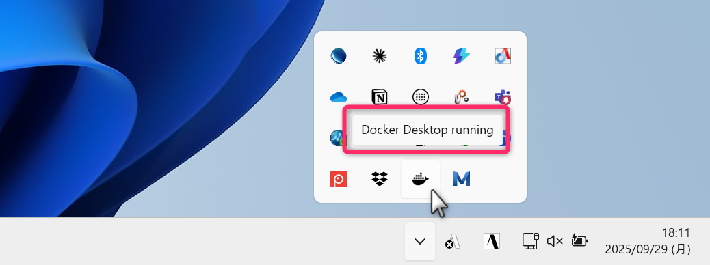
次に PostgreSQL v18.6 と DbGate v7.2.6 のイメージがプルできていること (ローカルにダウンロードできていること) を確認します。
ターミナルから次のコマンドを使って、ローカルに存在する Docker イメージの一覧 (リスト) を確認してください。
docker imagesコマンドの応答に、次のようなものが含まれていれば問題なくイメージのプルができています。
IMAGE ID
postgres:18.6 662db3da228c
dbgate/dbgate:7.2.6 95a402f3cb33
hello-world:latest e2ac70e7319aDocker Desktop (Docker Engine) が立ち上がっていないときは、以下のようなエラーが返ってきます。
failed to connect to the docker API at npipe:////./pipe/dockerDesktopLinuxEngine; check if the path is correct and if the daemon is running: open //./pipe/dockerDesktopLinuxEngine: The system cannot find the file specified.Dockerイメージの一覧は、Docker Desktop (GUI) からも確認できます。
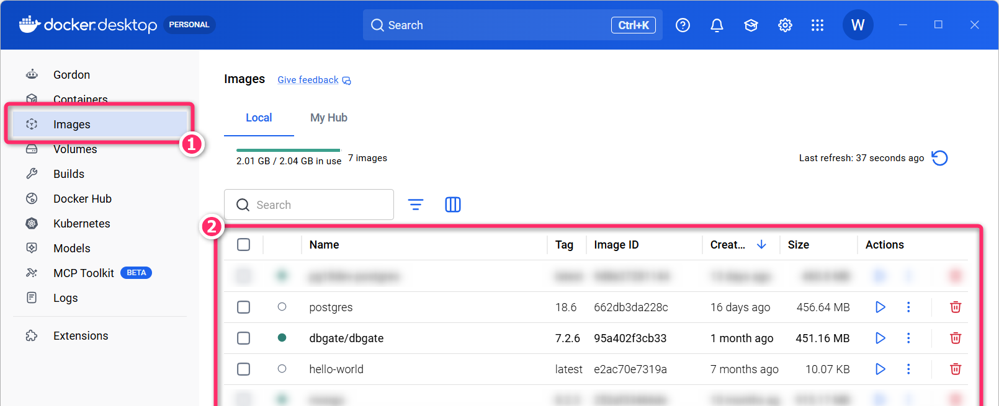
Dockerイメージ「postgres:18.6」の構成
皆さんには宿題として postgres:18.6
というDockerイメージをプルしてもらいました。postgres:18.6 は Debian
13 (コードネーム Trixie／トリクシー) の軽量版 (debian:trixie-slim)
の上で PostgreSQL 18.6 が動作するように構成された Docker
イメージとなります。
Debian (デビアン) は Linux を代表するディストリビューションのひとつで、各リリースには 映画「トイ・ストーリー」 に登場するキャラクタ名がコードネームとして採用されています。
- 参考: Debian のバージョン履歴 @ Wikipedia
3.2 コンテナの作成
Docker イメージ postgres:18.6 をもとに、PostgreSQL
のユーザ名やパスワードなどを環境変数として指定して、pg18 という名前をつけた
Docker コンテナ を作成していきます。
- 「イメージ」は、「コンテナ」を作成するための 雛形（テンプレート） と考えてください。
次の docker container create コマンドを実行してください。講義資料上では
表示幅の都合で途中で折り返される場合がありますが、実際には改行せず、1行のコマンドとして入力
してください。
docker container create --name pg18 -e POSTGRES_USER=student -e POSTGRES_PASSWORD=secret123 -e POSTGRES_DB=playground postgres:18.6正常に作成されると、Docker
から「コンテナID」が返されます。なお、同じコマンドをもう一度実行すると、既に pg18 という名前のコンテナが存在している
ため、指示されたコンテナが作成できない旨のエラーメッセージが表示されます。
Error response from daemon: Conflict. The container name “/pg18” is already in use by container “XXX….”. You have to remove (or rename) that container to be able to reuse that name.
コンテナIDは、Docker が各コンテナを識別するために自動的に割り当てる「64文字の16進数の識別子」です。コンテナごとに異なるIDが割り当てられるため、皆さんの画面に表示される値は講義資料の例とは異なります。
なお、docker container ls
などでは、この64文字すべてではなく、通常は先頭部分だけを使った短縮IDが表示されます。
コマンドを複数行に分けて書くときのルール
長いコマンドは シェルごとに決められた記号 を使って複数行に分けて記述できます。
PowerShell では「行末」に バッククォート `
を用いることでコマンドを複数行に分けて入力できます。同様のことを Bash
で行なう場合はバックスラッシュ
\、コマンドプロンプト (cmd.exe)
で行なう場合はキャレット (ハット) ^
を使用します。
docker container create --name pg18 `
-e POSTGRES_USER=student `
-e POSTGRES_PASSWORD=secret123 `
-e POSTGRES_DB=playground `
postgres:18.6PowerShell の場合、複数行のコマンドを貼り付けようとすると、以下のようなダイアログが表示されます。内容を確認して「強制的に貼り付け」を選択してください。
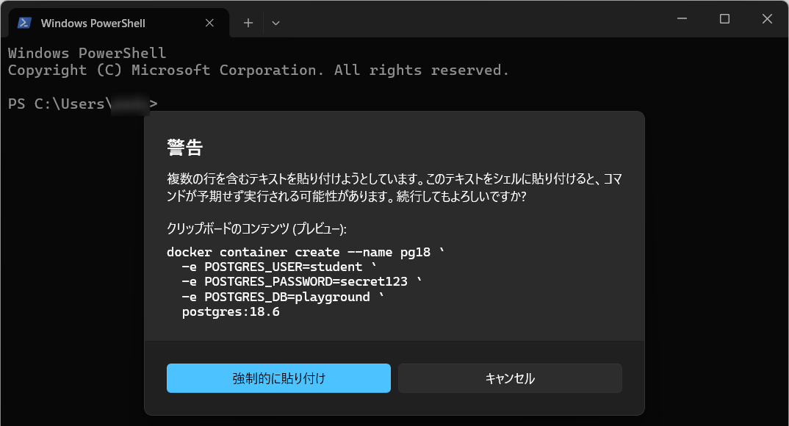
ここで、docker container create
コマンドで指定している各オプションの意味は次の通りです。
- –name pg18
- コンテナに
pg18という名前をつけています。コンテナ名には、英数字、ハイフン-、アンダーバー_、ピリオド.などを使用できます。ただし、先頭文字は英数字にする必要があります。
- コンテナに
- -e POSTGRES_USER=student
- 環境変数
POSTGRES_USERにstudentという値を設定します。 - PostgreSQL の公式 Docker イメージでは、この環境変数の値をもとに、初期化時に
studentという名前のスーパーユーザ（＝管理ユーザ）が自動作成 されます。
- 環境変数
- -e POSTGRES_PASSWORD=secret123
- 環境変数
POSTGRES_PASSWORDにsecret123という値を設定します。 - これにより、上記で作成されるスーパーユーザ
studentのパスワードとしてsecret123が設定されます。
- 環境変数
- -e POSTGRES_DB=playground
- 環境変数
POSTGRES_DBにplaygroundという値を設定します。 - これにより、初期化時に
playgroundという名前のデータベースが自動作成 されます。
- 環境変数
- postgres:18.6
- コンテナの雛形として使用する Docker イメージの名前とタグ (バージョン) を指定します。
このように、Docker イメージの多くは、環境変数を指定することで、コンテナを最初に起動するときの初期化処理をカスタマイズできるようになっています。利用できる環境変数やその役割は、Docker Hub 上の各イメージの詳細ページなどに記載されています。
- PostgreSQLの公式イメージの「How to extend this image」は こちら (カスタマイズ用の環境変数の設定などが記載されています)。
なお、PostgreSQL の公式 Docker イメージでは、これらの初期化処理は PostgreSQL のデータを保存する領域がまだ初期化されていない場合にのみ実行 されます。
環境変数の指定だけでは対応できないような、パッケージの追加や設定ファイルの変更、アプリケーションに必要なファイルの組み込みなどを行いたい場合は、Dockerfile
というファイルを使用します。
Dockerfile は、既存の Docker
イメージをもとにして「このパッケージを追加する」「この設定を適用する」といった処理を順番に記述し、自分でカスタマイズした
Docker イメージを作成するための設計図のようなもの となります。
Dockerfile の役割や書き方、そこから新しい Docker
イメージを作成する方法については、後で詳しく解説します。
プロンプト例 (意味や理解が曖昧な事項は生成AIを使って、再確認しておきましょう)
OS の「環境変数」とは何ですか。初学者が勘違いしそうなポイントを含めて教えてください。
Linux における「スーパーユーザ」とは何ですか。
Docker において「Dockerfile」とは何をするものですか。コンテナの作成に必須ですか。初学者が勘違いしそうなポイントを含めて教えてください。
コンテナの削除
先述したように、既に同名のコンテナ (pg18)
が存在するときに、docker container create ... を実行するとエラーとなります。
このときは、次のコマンドで「既存のコンテナ」を先に削除してから、再度、docker container create ...
コマンドを実行してください。rm は、remove の略です。
docker container rm pg18なお、起動中のコンテナを削除する場合には -f
オプションをつけてください (停止中のコンテナの削除に対しては -f
オプション不要です)。
3.2.1 定着確認
- Docker
では、「コンテナ」を雛形として「イメージ」を作成する。この説明は「適切である」か「適切ではない」か答えよ。
- 答え: 適切ではない
hoge:3.14という Docker イメージから、hoge-fugaというコンテナを作成するためのコマンド (コンテナを作成するだけで、コンテナの起動はしないコマンド) を答えよ。- 答え:
docker container create --name hoge-fuga hoge:3.14もしくはdocker create --name hoge-fuga hoge:3.14という省略形も可 (本科目のなかでは非推奨)。
- 答え:
hoge:3.14という Docker イメージを Docker Hub からプルするコマンドを答えよ。- 答え:
docker image pull hoge:3.14もしくはdocker pull hoge:3.14という省略形も可 (本科目のなかでは非推奨)。
- 答え:
hoge-fugaという Docker コンテナ (停止中) を削除するためのコマンドを答えよ。- 答え:
docker container rm hoge-fugaもしくはdocker rm hoge-fugaという省略形も可 (本科目のなかでは非推奨)
- 答え:
- ローカルにダウンロード済みの Docker イメージの一覧を表示するコマンドを答えよ。
- 答え:
docker imagesもしくはdocker image ls。
- 答え:
- Windows で
docker imagesを実行したところ、Docker Engine に接続できないというエラーが表示された。Docker Desktop について、まず何を確認すべきか答えよ。- 答え: Docker Desktop が起動済みで、ステータスが「Running」になっていること。
- Docker イメージの指定
postgres:18.6において、postgresと18.6はそれぞれ何を表すか答えよ。- 答え:
postgresはイメージの名前、18.6はタグ (この例ではバージョン) を表す。
- 答え:
- Docker コンテナの作成時に、環境変数
POSTGRES_DBにplaygroundという値を設定するためのコマンドオプションを答えよ。- 答え:
-e POSTGRES_DB=playground。
- 答え:
docker container createが正常終了すると返される「コンテナID」は、どのような識別子か答えよ。また、同じイメージから各学生がコンテナを作成したとき、全員のIDが同じになるか答えよ。- 答え: Docker がコンテナごとに自動的に割り当てる64文字の16進数の識別子。同じイメージを使っても、コンテナごとに異なるIDになる。
- 長いコマンドを複数行に分けて入力するとき、行末に付ける記号を
PowerShell、Bash、コマンドプロンプト (cmd.exe) のそれぞれについて答えよ。
- 答え: PowerShell はバッククォート
(
`)、Bash はバックスラッシュ (\)、コマンドプロンプトはキャレット (^)。
- 答え: PowerShell はバッククォート
(
- Docker の
Dockerfileは「カスタマイズしたイメージを作成するための設計図」「コンテナを作成するたびに必ず用意するファイル」のどちらか答えよ。- 答え: カスタマイズしたイメージを作成するための設計図。既存のイメージからコンテナを作成するだけなら、用意する必要はない。
pg18という名前の停止中の Docker コンテナが既に存在する。同じ名前でdocker container create --name pg18 postgres:18.6を実行すると、どうなるか答えよ。- 答え: コンテナ名の重複を示すエラーとなり、新しいコンテナは作成されない。
- 起動中の Docker コンテナ
pg18を強制的に削除するためのコマンドを答えよ。- 答え:
docker container rm -f pg18。
- 答え:
3.3 コンテナの状態確認
存在しているコンテナの一覧 (リスト)
は、次のコマンドで確認できます。ps とは process status
(プロセスの状態) の略です。
docker ps --all--all(Long Option) は、-a(Short Option) とすることもできます。
コマンドを実行すると、次のような応答が返ってくるはずです。IMAGE が
postgres:18.6、NAMES が pg18 (コンテナの作成時に
--name で指定した名前)、STATUS が Created
となっている行が存在することを確認してください。
CONTAINER ID IMAGE COMMAND CREATED STATUS PORTS NAMES
e14852ebd977 postgres:18.6 "docker-entry…" 2 seconds ago Created pg18なお、(停止中のコンテナは除外して) 起動中のコンテナだけを表示したい場合は
--all のオプションを外して次のようにしてください。
docker ps現時点では pg18
というコンテナを作成しただけで、まだ「コンテナの起動はしていない状態」なのでリストには何も表示されないはずです
(別途、Claude の MCP
などで、コンテナを起動しているときは、それが表示されることがあります)。
3.3.1 定着確認
- Docker で起動中のコンテナだけの一覧を表示するコマンドを答えよ。
- 答え:
docker ps
- 答え:
- Docker で停止中のものを含めてコンテナの一覧を表示するコマンドを答えよ。
- 答え:
docker ps -aもしくはdocker ps --all
- 答え:
- Docker の
docker psコマンドにおいて、psは何の略か答えよ。- 答え: process status (プロセスの状態)。
docker ps --allの--allを、同じ意味の Short Option に書き換えたコマンドを答えよ。- 答え:
docker ps -a。
- 答え:
docker ps -aの実行結果で、あるコンテナの STATUS がCreatedとなっていた。このコンテナはどのような状態か答えよ。- 答え: コンテナは作成済みだが、まだ一度も起動していない状態。
docker container create --name pg18 postgres:18.6でコンテナを正常に作成したが、まだ起動していない。このpg18は、docker psとdocker ps -aのそれぞれの一覧に表示されるか答えよ。- 答え:
docker psには表示されず、docker ps -aには表示される。
- 答え:
docker psを実行したところ、コンテナの行が1件も表示されなかった。この結果だけで「コンテナが1つも存在しない」と判断してよいか答えよ。また、停止中のコンテナも含めて存在を確認するコマンドを答えよ。- 答え: 判断してはいけない。
docker psは起動中のコンテナだけを表示するため、停止中のコンテナが存在する可能性がある。docker ps -aまたはdocker ps --allで確認する。
- 答え: 判断してはいけない。
docker ps -aの実行結果で、ある行の IMAGE がpostgres:18.6、NAMES がpg18となっていた。この2つの値は、それぞれ何を表しているか答えよ。- 答え:
postgres:18.6はコンテナの作成に使用したイメージの名前とタグ、pg18はコンテナの名前。
- 答え:
3.4 コンテナの起動
コンテナを起動するときは、次のように コンテナ名 (ここでは
pg18) を指定して docker container start コマンドを実行します。
docker container start pg18正常に起動すると、応答としてコンテナ名 pg18 が表示されます。
コンテナが起動したことを確認するために docker ps
コマンドを実行し、pg18 コンテナの STATUS が 「Up」 になっていることを確認してください
(以下の実行例では、一部の列の表示を省略しています)。
CONTAINER ID IMAGE CREATED STATUS PORTS NAMES
e14852ebd977 postgres:18.6 8 minutes ago Up 8 minutes 5432/tcp pg18なお、Dockerコンテナの状況 (一覧・起動・停止) は、Docker Desktop (GUI) からも確認することができます。起動中のコンテナは、Name の項目の前に緑色の ● マークがついて、Actions の項目が 停止マーク になります。
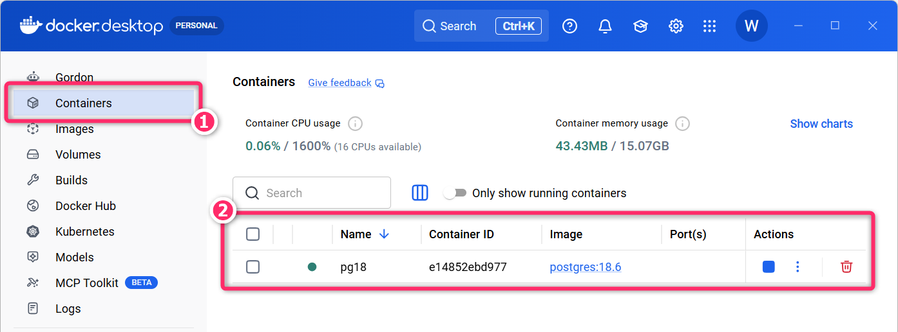
3.4.1 定着確認
hoge:3.14という Docker イメージからhoge-fugaというコンテナが作成済みのとき、そのコンテナを起動するためのコマンドを答えよ。- 答え:
docker container start hoge-fugaもしくはdocker start hoge-fugaという省略形も可 (本科目では非推奨)。
- 答え:
- 停止中の Docker コンテナ
pg18に対してdocker container start pg18を実行し、正常に起動できた。このとき、コマンドの応答として何が表示されるか答えよ。- 答え: コンテナ名の
pg18が表示される。
- 答え: コンテナ名の
- Docker コンテナ
pg18を起動した。起動中のコンテナ一覧を表示するコマンドと、その一覧でpg18の起動を確認するために確認すべき列と、その表示を答えよ。- 答え:
docker psを実行し、NAMES が「pg18」の行で STATUS が「Up」になっていることを確認する。
- 答え:
- Docker Desktop (GUI) で、あるコンテナの Name の前に緑色の ●
があり、Actions
に停止マークが表示されていた。このコンテナは「起動中」と「停止中」のどちらか答えよ。
- 答え: 起動中。
3.5 コンテナの利用 (Bash経由)
ここまでの操作で pg18 というコンテナが起動し、そのコンテナ内では PostgreSQL 18（RDBMS）が動作している状態
となっています。ここからは、実際にコンテナのなかに入って PostgreSQL を操作していきます。
まずは、次の docker container exec コマンドを実行して、コンテナ内で
Bash を起動し、対話的に操作できる状態にします。
docker container exec -it pg18 bash- 上記のコマンドは
docker exec -it pg18 bashのようにcontainerを省略して記述することもできます。
docker container exec
は、すでに起動しているコンテナのなかで、指定したコマンドを実行（execute）するためのコマンド
です。
今回指定している bash は、Linux で広く使われている シェルの 1
つです。そのため、このコマンドでは「pg18 コンテナの中で bash
を実行する」という指示を Docker に与えていることになります。
また、-it は、コンテナ内で起動した Bash
を手元のターミナルから対話的に操作するためのオプションです。
-i（--interactive）：標準入力を開いたままにし、キーボードから入力できるようにする-t（--tty）：仮想的なターミナル（TTY）を割り当てる- Linux
のプログラムのなかには「出力先がターミナルかどうか」によって表示や動作を変えるものがあります。
-tを指定すると、Bash などが通常のターミナル上で実行されているのと近い状態で動作します。
- Linux
のプログラムのなかには「出力先がターミナルかどうか」によって表示や動作を変えるものがあります。
対象のコンテナが起動していないときは
Error response from daemon: container xxxx is not running
のようなエラーとなります。
また、対象のコンテナが存在しないときは
Error response from daemon: No such container: pg18
のようなエラーとなります。
プロンプト例
docker container execコマンドで指定する-itオプションについて詳しく解説してください。
Linuxの操作に関する文脈において「シェル」とは何ですか。
Linuxの操作に関する文脈において「bash」とは何ですか。
Linux のプログラムのなかには「出力先がターミナルかどうか」によって表示や動作を変えるものがあると聞いたのですが、どういうことですか？
3.5.1 定着確認
- 起動中の Docker コンテナ
pg18のなかで Bash を起動し、手元のターミナルから対話的に操作するためのコマンドを答えよ。- 答え:
docker container exec -it pg18 bash。docker exec -it pg18 bashという省略形も可 (本科目では非推奨)。
- 答え:
- Docker の
docker container execは、何をするためのコマンドか答えよ。また、実行対象のコンテナは起動済みである必要があるか答えよ。- 答え: 起動済みのコンテナのなかで、指定したコマンドを実行するためのコマンド。対象のコンテナは起動済みである必要がある。
docker container exec -it pg18 bashの末尾に指定したbashは、どのようなソフトウェアか答えよ。また、このコマンドで Bash が実行される場所は「Windows 側」「pg18 コンテナ内」のどちらか答えよ。- 答え: Bash は Linux
で広く使われているシェルの1つ。実行される場所は
pg18コンテナ内。
- 答え: Bash は Linux
で広く使われているシェルの1つ。実行される場所は
docker container exec -it pg18 bashの-itに含まれる-iについて、Long Option と、その役割を答えよ。- 答え:
--interactive。標準入力を開いたままにし、キーボードから入力できるようにする。
- 答え:
docker container exec -it pg18 bashの-itに含まれる-tについて、Long Option と、その役割を答えよ。- 答え:
--tty。仮想的なターミナル (TTY) を割り当てる。
- 答え:
3.5.2 Linuxシェル (Bash) の操作
上記のように docker container exec -it pg18 bash
コマンドを実行すると、ターミナルのプロンプト (＝コンソールに関する文脈では
ユーザからの入力を待っていることを示すために表示される文字列
を意味する) が、次のように切り替わります。
root@e14852ebd977:/#このようにプロンプトが変わったことで、操作対象が「Windows の PowerShell」から「Docker コンテナ内の Linux のBash環境」に切り替わっていることが確認できます。
ターミナルに表示されるプロンプトが持つ情報
Linux の root@e14852ebd977:/#
というプロンプトには、次のような情報が含まれています。
- root
- ログインしているユーザ名を表しています。「root」は 管理者 (スーパーユーザ) を意味します。
- @e14852ebd977
@の右側は ホスト名を表します。- Docker では、ホスト名を特に指定していない場合、通常は コンテナIDの先頭部分（短縮ID）と同じ値になります。
- :/
- コロンの右側は カレントディレクトリ (カレントフォルダ) の位置 を表しています。
- ここでは
/なので、Linux のファイルシステムの最上位にあたる ルートディレクトリがカレントディレクトリになっています。
- # :
- シャープは 現在のユーザが
root（スーパーユーザ）であることを示すプロンプト記号です。一般ユーザのときは、通常、
$が表示されます。
- シャープは 現在のユーザが
root（スーパーユーザ）であることを示すプロンプト記号です。一般ユーザのときは、通常、
PostgreSQL コンテナ (pg18) の内部が「どのような Linux
環境で構成されているか」は、次のコマンドで確認することができます。
cat /etc/os-release上記のコマンドを実行すると、以下のように Debian 13 (コードネーム trixie ) に関する情報が表示されます。
PRETTY_NAME="Debian GNU/Linux 13 (trixie)"
NAME="Debian GNU/Linux"
VERSION_ID="13"
VERSION="13 (trixie)"
VERSION_CODENAME=trixie
DEBIAN_VERSION_FULL=13.7
ID=debian
HOME_URL="https://www.debian.org/"
SUPPORT_URL="https://www.debian.org/support"
BUG_REPORT_URL="https://bugs.debian.org/"Docker コンテナのなかにも Linux がある？
Docker コンテナの中には、ls や cat、bash
などを実行するための Linux のファイルやコマンドが含まれています。
ただし、一般的な仮想マシンのように、コンテナごとに Linux カーネルまで丸ごと動かしているわけではありません。Docker コンテナは、ホスト側で動作している Linux カーネルを共有しながら、プロセスやファイルシステムなどを分離して動作します。
そのため、仮想マシンと比べて比較的軽量に起動できます。
この pg18
コンテナでは、ls、pwd、cd、cat
などの基本的なコマンドは利用できますが、nano や vim、vi
といった テキストエディタは標準ではインストールされていません。Docker
イメージは、必要な機能だけを含めてできるだけ小さく保つように作られていることが多い
ため、普段使っている Linux
環境に入っているコマンドがすべて利用できるとは限らないので注意して下さい。
- コンテナ内の設定ファイルを編集したい場合は、必要に応じて別の方法を利用します。
3.5.3 定着確認
- ターミナルの「プロンプト」とは何か答えよ。
- 答え: ユーザにコマンドなどの入力を促すために表示される文字列。
- Linux の Bash で、プロンプトが
root@e14852ebd977:/#と表示されている。root、e14852ebd977、/、#がそれぞれ表す情報を答えよ。- 答え: 「root」はユーザ名、「e14852ebd977」はホスト名、 「/」 はカレントディレクトリがルートディレクトリであること、「#」は現在のユーザが root (スーパーユーザ) であることを表す。
- Docker コンテナ内の Bash で、Linux
のディストリビューション名やバージョンを確認するために、OS
の情報が記載されたファイルの内容を表示するコマンドを答えよ。
- 答え:
cat /etc/os-release。
- 答え:
- Linux の Docker コンテナは、一般的な仮想マシンと同じように、コンテナごとに独立した Linux
カーネルを起動している。この説明は「適切である」か「適切ではない」か答えよ。
- 答え: 適切ではない。ホスト側で動作している Linux カーネルを共有しながら、プロセスやファイルシステムなどを分離して動作する。
- Docker コンテナ内で
lsやcatが使えれば、nanoやvimといったテキストエディタも必ず使える。この説明は「適切である」か「適切ではない」か答えよ。また、その理由を答えよ。- 答え: 適切ではない。イメージは必要な機能だけを含めて小さく保つように作られていることが多く、テキストエディタがインストールされているとは限らない。
3.5.4 psql の対話モードで PostgreSQL を操作
このコンテナでは、既に「PostgreSQL のサーバープロセス」が起動しており、RDBMSのクライアントツール から接続して利用できる状態になっています。
PostgreSQL のサーバーが接続を受け付けられる状態になっているかは pg_isready
コマンドで確認できます。
root@e14852ebd977:/# pg_isready
/var/run/postgresql:5432 - accepting connectionsaccepting connections と表示されていれば、PostgreSQL サーバーが起動し、クライアントからの接続を受け付けられる状態です。
表示されている 5432 は、PostgreSQL が標準で使用する ポート番号 です。また、この例の /var/run/postgresql
は、コンテナ内部から PostgreSQL に接続する際に利用されている Unix
ドメインソケット の場所を表しています。
プロンプト例
Unix ドメインソケットってなんですか？ PostgreSQLの接続の文脈で出てきたのですが。
では、実際に PostgreSQL の公式 CLI クライアントツールである psql
を使って接続していきます。次のコマンドを実行してください。
- CLI: Command Line Interface
psql -U student -d playgroundここで -U は ログインする「ユーザ名」、-d は 接続する「データベース名」 を指定するためのオプションとなります。
コマンドを実行すると「PostgreSQL
の対話モード」が開始し、ターミナルのプロンプトが以下のような表示
(接続しているデータベース名=#) になります。これにより、SQL
を打ち込んで、データベースを操作する準備が整いました。
psql (18.6 (Debian 18.6-1.pgdg13+2))
Type "help" for help.
playground=#- Linux の Bash でも root のときに
#が表示されましたが、ここで表示されている#は Linux の root ユーザを意味しているわけではありません。現在は psql のなかなので、PostgreSQL におけるスーパーユーザ であることを示しています。 - psql の対話モードそのものを終了したい場合 (抜けたい場合) は
\qを入力してください。
対話モードの利用中に、SQLを入力・実行しても「反応がない？」と感じたときは、セミコロン
; を入力して Enter キーを押してみてください。
反応がないように見えるとき、たいていは、システムがコマンド終端の ;
を待っている状態です。それでも解決しないときは、ターミナルを閉じて、再度、docker container exec ...
で接続してください。
3.5.5 テーブルの作成 (CREATE TABLE)
動作確認として、次に示す s_users というテーブルを作成してみます
(s は「sample」の意味で付けています)。
RDBMS における「テーブル名」は、前回も説明したように一般的には 複数形の名前をスネークケースで記述 します。ただし、実際の開発では、チームやプロジェクトで定められた命名規則を優先します。
■ s_users
| id | name | age |
|---|---|---|
| 1 | Alice | 20 |
| 2 | Bob | 25 |
まずは、テーブルのスキーマ (＝どのような列を持ち、それぞれをどのデータ型で扱うかといったテーブルの構造) を定義して、テーブルを作成します。
次の SQL をコピーして、psql の対話モードに貼り付けて実行してください。
正常に作成されると、次のように表示されます。
CREATE TABLE一方、すでに s_users という名前のテーブルが存在している場合は、次のようなエラーが表示されます。
ERROR: relation "s_users" already existsプロンプト例
PostgreSQL を使用しています。次の SQL が何をしているのか、CREATE TABLE、PRIMARY KEY、NOT NULL、INTEGER、TEXT の意味も含めて分かりやすく説明してください。
CREATE TABLE s_users (id INTEGER PRIMARY KEY, name TEXT NOT NULL, age INTEGER);
3.5.6 レコードの挿入 (INSERT)
次に、作成した s_users テーブルに レコードを挿入する SQL を実行します。
SQL では、通常、「改行」や「複数の空白文字」は SQL を読みやすくするための区切り
(空白) として扱われるので
INSERT INTO s_users (id, name, age) VALUES (1, 'Alice', 20), (2, 'Bob', 25);
のように 1行で記述しても同じ意味 になります。
ただし、文字列リテラルのなかなど、改行や空白そのものがデータとして意味を持つ場合もあるため、「SQL はすべての改行や空白を完全に無視するというわけではない」ので注意して下さい。
この SQL では s_users テーブルの
id、name、age
の各列に対して、2件のレコードをまとめて挿入しています。成功すると
INSERT 0 2 と表示されます。
プロンプト例
PostgreSQL で、テーブルに2件のレコードを挿入したところ
INSERT 0 2と表示されました。0と2はそれぞれ何を意味していますか。
テーブルから全てのレコードを削除したいときは…
テーブルそのものは残したまま、格納されているすべてのレコードを削除する場合は、DELETE FROM
を使用できます。
また、PostgreSQL には TRUNCATE TABLE
という命令もあります。TRUNCATE TABLE
もテーブル内の全レコードを削除しますが、DELETE FROM
とは内部的な処理方法が異なり、大量のレコードを一括して削除する場合に高速に処理できることがあります。
プロンプト例
リレーショナルデータベースにおける
DELETE FROM xxxとTRUNCATE TABLE xxxxの違いについて教えてください。どのような場面で使い分けるのかも含めて教えてください。
大まかには、次のように考えると分かりやすいと思います。
DELETE：レコードを削除するTRUNCATE：テーブルを空にするDROP：テーブルそのものを削除する
3.5.7 定着確認
- PostgreSQL に
s_users (id INTEGER PRIMARY KEY, name TEXT NOT NULL, age INTEGER)という定義の空のテーブルがある。id=1, name='Alice', age=20とid=2, name='Bob', age=25の2件を、1つの SQL で挿入する命令を答えよ。- 答え:
INSERT INTO s_users (id, name, age) VALUES (1, 'Alice', 20), (2, 'Bob', 25);
- 答え:
- PostgreSQL で
INSERTによるレコードの挿入が成功し、INSERT 0 5と表示された。この処理により挿入されたレコードの件数を答えよ。- 答え: 5件
s_usersテーブルの列構成や制約は残したまま、すべてのレコードを削除する SQL を、DELETE FROMを使って記述せよ。- 答え:
DELETE FROM s_users;
- 答え:
3.5.8 レコードの抽出 (SELECT)
次に、s_users テーブルに格納されている全てのレコードを 抽出 (選択) する SQL を実行します。
実行結果は、次のようになります。
id | name | age
----+-------+-----
1 | Alice | 20
2 | Bob | 25
(2 rows)ここで、SELECT は 取得する列を指定する句、FROM
は どのテーブルから取得するかを指定する句
となります。また、*（アスタリスク）は「すべての列」を意味します。
そのため、SELECT * FROM s_users; は s_users
テーブルから、すべての列を取得する という意味になります。
次のように、列 (カラム) の出力順を指定して抽出すること もできます。
実行結果は、次のようになります。
age | id | name
-----+----+-------
20 | 1 | Alice
25 | 2 | Bob
(2 rows)また、SELECT name, age FROM s_users; とすれば、name と
age だけを抽出・表示することができます (id
の列は抽出・表示しない)。
3.5.9 定着確認
- PostgreSQL に
id、name、ageの3列を持つs_usersテーブルがある。このテーブルの全レコードについて、すべての列を取得する SQL を答えよ。- 答え:
SELECT * FROM s_users;
- 答え:
SELECT * FROM s_users;の*(アスタリスク) は何を意味するか答えよ。- 答え: すべての列。
SELECT name, age FROM s_users;において、取得する列を指定している部分と、取得元のテーブルを指定している部分をそれぞれ答えよ。- 答え:
SELECT name, ageが取得する列を指定し、FROM s_usersが取得元のテーブルを指定している。
- 答え:
SELECT age, id, name FROM s_users;を実行したとき、結果の列は左からどのような順番で表示されるか答えよ。- 答え:
age、id、nameの順番。
- 答え:
- PostgreSQL に
id、name、ageの3列を持つs_usersテーブルがある。全レコードについて、idは表示せず、nameとageだけをこの順番で取得する SQL を答えよ。- 答え:
SELECT name, age FROM s_users;
- 答え:
- psql で
SELECT * FROM s_users;を実行したところ、結果の末尾に(2 rows)と表示された。この表示は何を意味するか答えよ。- 答え: 取得結果に2件のレコードが含まれていること。
id、name、ageの3列を持つs_usersテーブルに対してSELECT name, age FROM s_users;を実行すると、テーブルそのものからid列が削除される。この説明は「適切である」か「適切ではない」か答えよ。- 答え: 適切ではない。取得結果に
id列を含めないだけで、テーブルの列構成や格納されているデータは変わらない。
- 答え: 適切ではない。取得結果に
3.5.10 PostgreSQL の対話モードの終了と Linuxシェルの終了
psql で \q (もしくは[Ctrl]+[D]のショートカット)
を入力すると対話モードが終了して、Linux のシェルに戻ります。
- ターミナルのプロンプトは
root@d2196c5352d3:/#のようになるはずです。
さらに、exit (もしくは[Ctrl]+[D]のショートカット)
を入力するとLinux のシェルが終了して、Windows のPowerShell に戻ってきます。
- ターミナルのプロンプトは
PS C:\Users\xxxx>のようになるはずです。
3.6 コンテナの利用 (Windows から psql を直接実行)
ここまでの手順では、docker container exec -it pg18 bash で いったんコンテナ内で Bash を起動し、その Bash から psql
を実行 していました。
しかし、docker container exec では実行するコマンドとして bash
以外も指定できます。そのため、Windows 側から、コンテナ内の psql
を直接実行することもできます。
例えば、次のような SQL を記述した hoge.sql というファイルを Windows
側で用意しておきます。
このSQLファイルを、次のように ファイルリダイレクト (<)
を使って psql に流し込むことができます。コマンドプロンプト
(cmd.exe) で、hoge.sql
が存在するディレクトリに移動してから、次のコマンドを実行してください。
docker container exec -i pg18 psql -U student -d playground < hoge.sql- 上記コマンドでは、これまで使用していた
-itではなく、-iのみを指定している点にも注目してください。 - 上記コマンドは PowerShell ではなくコマンドプロンプト (cmd.exe)
から実行してください。PowerShell ではファイルリダイレクト (
<) が利用できません。
実行結果は、次のようになります。
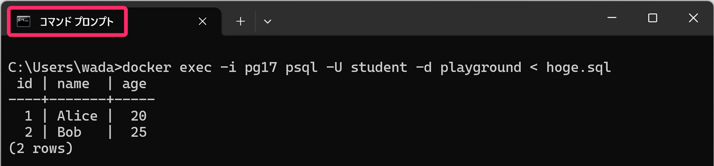
このコマンドでは、大まかに次のような処理 が行われています。
- Windows 側のコマンドプロンプトが
hoge.sqlの内容を読み込む <によって、その内容をdocker container execの 標準入力に渡す-iによって、その標準入力がコンテナ内で実行されるpsqlまで接続されるpsqlが受け取った SQL を PostgreSQL に送信して実行する
hoge.sql
というファイルそのものをコンテナへコピーしているわけではなく、Windows
側で読み込んだファイルの内容を、標準入力を通してコンテナ内の psql
に送り込んでいることに注意してください。
プロンプト例
Docker に関する質問です。
docker container exec -it pg18 bashでは-itオプションなのに、docker container exec -i pg18 psql -U student -d playground < hoge.sqlでは-iオプションにするのはなぜですか。
Linuxなどのシェルに関する文脈において「ファイルリダイレクト」とは何ですか？
3.7 コンテナの停止
次のコマンドで pg18 のコンテナを停止 (≠削除)
します。正常に停止すると、応答としてコンテナ名 pg18 が表示されます。
docker container stop pg18ここで行っているのは、コンテナの 停止 です。コンテナそのものを削除しているわけではありません。
念のために docker ps で起動中のコンテナ一覧に pg18
が含まれていないことを確認してください。
3.7.1 演習
再び pg18 コンテナを起動し、そこに接続し psql から
SELECT * FROM s_users;
を実行し、テーブルのデータが残っていること (＝コンテナを停止してもデータが消失しないこと) を確認してください。
プロンプト例
Docker で
docker create --name pg18 -e POSTGRES_USER=hoge -e POSTGRES_PASSWORD=fuga -e POSTGRES_DB=piyo postgres:18.6のようにコンテナを作成しました。このコンテナを起動して、データベースにテーブルを作成して、レコードを挿入しました。その後、このコンテナを停止し、再度、起動すると、テーブルとレコードの情報が消えずに残っていました。これらの情報は、どこに保存されていたのでしょうか。
3.8 コンテナの削除
次のコマンドで、停止中の pg18 コンテナを削除することができます。
上記の演習でコンテナを再起動している場合には、先に
docker container stop pg18
でコンテナを停止してから、削除を実行してください。
docker container rm pg18削除したコンテナは、docker container start
で再び起動することはできません。
また、再度、以下のコマンドで同じ名前のコンテナを再作成しても、以前のコンテナのデータ (作成したテーブルや挿入したレコード) が引き継がれるわけではありません。
docker container create --name pg18 -e POSTGRES_USER=student -e POSTGRES_PASSWORD=secret123 -e POSTGRES_DB=playground postgres:18.6中級者向け: コンテナを削除すると、DBデータも削除される？
PostgreSQL の公式 Docker イメージでは、DBデータは Docker
ボリュームに保存されます。そのため、docker container rm pg18
でコンテナを削除しても、DBデータ自体はボリュームに残っています。
ただし！同じ名前の pg18
コンテナを作り直しても、以前のボリュームが自動的に再利用されるわけではありません。そのため、新しいコンテナから見ると、以前のテーブルやレコードは引き継がれていないように見えます。
コンテナを作り直しても同じDBデータを使いたい場合は、コンテナ作成時に -v
などのオプションを指定し、利用するボリュームを明示的に指定する必要があります。
念のために docker ps -a (-a
は停止中のコンテナも含めて表示するオプション) で、pg18
が消えていることを確認してください。
停止中のものも含めて、コンテナが1個も存在しないとき、Docker Desktop では以下のような表示となります。
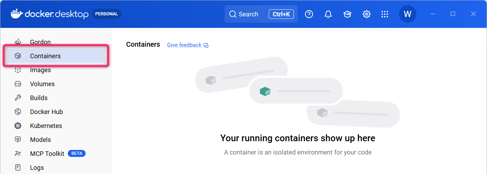
3.8.1 定着確認
- 起動中の Docker コンテナ
pg18を停止するコマンドを答えよ。また、正常に停止したときの応答として何が表示されるか答えよ。- 答え:
docker container stop pg18。応答としてコンテナ名のpg18が表示される。
- 答え:
- 停止中の Docker コンテナ
pg18を削除するコマンドを答えよ。- 答え:
docker container rm pg18もしくはdocker rm pg18という省略形も可 (本科目では非推奨)。
- 答え:
- 起動中の Docker コンテナ
pg18を、強制削除の-fオプションを使わずに削除したい。停止から削除までのコマンドを、実行する順番に答えよ。- 答え: まず
docker container stop pg18、つづいてdocker container rm pg18を実行する。
- 答え: まず
- Docker コンテナ
pg18を削除せずに停止した。このpg18は、docker psとdocker ps -aのそれぞれの一覧に表示されるか答えよ。- 答え:
docker psには表示されず、docker ps -aには表示される。
- 答え:
- PostgreSQL コンテナ
pg18でテーブルを作成してレコードを挿入した後、docker container stop pg18で停止した。同じコンテナを再び起動するコマンドを答えよ。また、停止前のテーブルとレコードは残っているか答えよ。- 答え:
docker container start pg18。コンテナを停止しただけなので、テーブルとレコードは残っている。
- 答え:
docker container rm pg18でコンテナを削除した後、同じコンテナをdocker container start pg18で再び起動できる。この説明は「適切である」か「適切ではない」か答えよ。- 答え: 適切ではない。削除したコンテナは存在しないため、再び利用するにはコンテナを新しく作成する必要がある。
postgres:18.6から作成した停止中のコンテナpg18に対してdocker container rm pg18を実行すると、元のイメージpostgres:18.6も削除される。この説明は「適切である」か「適切ではない」か答えよ。- 答え: 適切ではない。コンテナを削除しても、元のイメージは残る。
- PostgreSQL のデータを Docker ボリュームに保存している停止中のコンテナ
pg18に対して、docker container rm pg18を実行した。このコマンドだけで、ボリュームと、そのなかのデータも削除されるか答えよ。- 答え: 削除されない。コンテナとボリュームは別に管理されており、このコマンドではボリューム内のデータは残る。
3.8.2 演習
ここまでの一連の操作 (コンテナの作成👉コンテナの起動👉コンテナの利用 (psqlからSQLの実行)👉コンテナの停止👉コンテナの削除) を、再度、実行して Docker に関する基本的なコマンド操作に慣れてください。
- 授業時間外学習を利用して、3回目、4回目も実行して理解を深めるとともにコマンドに慣れてください。
イメージのプル、コンテナの作成・起動をまとめて実行するコマンド
ここまでは「イメージのプル」「コンテナの作成」「コンテナの起動」を個別に実行しましたが、docker container run
コマンドでは、これらの3つをまとめて実行すること ができます。
docker container run --name pg18 `
-e POSTGRES_USER=student `
-e POSTGRES_PASSWORD=secret123 `
-e POSTGRES_DB=playground `
-d `
postgres:18.6-d オプションによって、コンテナを デタッチドモード (Detached
Mode) で起動します。これにより、コンテナは バックグラウンドで実行
され、ターミナルはすぐに操作可能な状態に戻ります。
なお、run は、pull create start
をまとめて実行するものなので、以降は stop で停止、再び起動するときは
start を使用します。既に同名のコンテナが存在する場合は run
は失敗するので注意してください。
プロンプト例
Docker の
docker container runコマンドにおいて「コンテナをデタッチモードで起動する」とは、どういうことですか？デタッチモードで起動しないときの動作はどうなりますか。
3.9 まとめ
以上のように Docker を利用することで、即座に利用可能な PostgreSQL 環境が簡単に構築・破棄できるようになります。Windows に直接 PostgreSQL をインストール/アンインストールする場合と比較し、大幅に手間と時間を省くことができます。
3.9.1 定着確認
- ターミナルのプロンプトが
root@e14852ebd977:/#のように表示されているとき、その操作対象は「Windows の PowerShell」「Docker コンテナ内の Linux シェル」「PostgreSQL の対話モード (psql)」のうち、どれと考えることができるか。- 答え: Docker コンテナ内の Linux シェル
- どのコンテナからも利用されていない Docker イメージ
postgres:18.6を削除するコマンドを答えよ。- 答え:
docker image rm postgres:18.6
- 答え:
- Docker
コンテナの名前として使えるものを、次のなかからすべて選べ。また、使えない名前については、その理由を答えよ。A:
pg18_test、B:pg18-test、C:pg18.test、D:_pg18。- 答え: A、B、C。アンダーバー、ハイフン、ピリオドは使えるが、先頭文字は英数字にする必要があるため、Dは使えない。
- PostgreSQL の
psqlは「データを管理するサーバープロセス」「SQL を送信して結果を確認する CLI クライアントツール」のどちらか答えよ。また、CLI は何の略か答えよ。- 答え: SQL を送信して結果を確認する CLI クライアントツール。CLI は Command Line Interface の略。
- PostgreSQL コンテナ内の Bash から、ユーザ
studentとしてデータベースplaygroundに接続し、psql の対話モードを開始するコマンドを答えよ。また、ユーザ名とデータベース名を指定するオプションをそれぞれ答えよ。- 答え:
psql -U student -d playground。-Uがユーザ名、-dがデータベース名を指定する。
- 答え:
- データベースの「テーブルのスキーマ」とは、どのような情報か答えよ。
- 答え: どのような列を持ち、それぞれをどのデータ型で扱うかといった、テーブルの構造を定義する情報。
- PostgreSQL に、
idがINTEGER PRIMARY KEY、nameがTEXT NOT NULL、ageがINTEGERであるs_usersテーブルを新しく作成する SQL を答えよ。また、正常に作成されたときの応答を答えよ。- 答え:
CREATE TABLE s_users (id INTEGER PRIMARY KEY, name TEXT NOT NULL, age INTEGER);。応答はCREATE TABLE。
- 答え:
- PostgreSQL で
CREATE TABLE s_users (id INTEGER PRIMARY KEY, name TEXT NOT NULL, age INTEGER);を実行したところ、ERROR: relation "s_users" already existsと表示された。このエラーは何を意味するか答えよ。- 答え: 作成先に
s_usersという名前のテーブルなどが既に存在していること。
- 答え: 作成先に
- PostgreSQL で
TRUNCATE TABLE s_users;が正常終了した。s_usersのレコードと、テーブルそのものは、それぞれどうなるか答えよ。- 答え: すべてのレコードが削除され、テーブルは空になる。列構成や制約など、テーブルそのものは残る。
- PostgreSQL で
DROP TABLE s_users;が正常終了した。s_usersのレコードと、テーブルそのものは、それぞれどうなるか答えよ。- 答え: レコードを含めてテーブルそのものが削除される。
- SQL
は、改行や空白を文字列リテラルのなかも含めてすべて無視する。この説明は「適切である」か「適切ではない」か答えよ。
- 答え: 適切ではない。通常は命令や名前などを区切る空白として扱われるが、文字列リテラルのなかでは、改行や空白そのものがデータとして意味を持つ。
- Docker コンテナ内の Bash から psql を起動している。psql の対話モードを終了し、コンテナ内の
Bash に戻るために入力するコマンドを答えよ。
- 答え:
\q
- 答え:
- Windows の PowerShell から
docker container exec -it pg18 bashで接続したコンテナ内の Bash を終了するコマンドを答えよ。また、終了後はどこに戻るか、pg18コンテナも停止するか答えよ。- 答え:
exit。Windows の PowerShell に戻る。今回の PostgreSQL コンテナでは、Bash を終了してもコンテナと PostgreSQL サーバーは動作を続ける。
- 答え:
- Windows 側のカレントディレクトリに、実行したい SQL を記述した hoge.sql
がある。起動中のコンテナ
pg18の psql に、ユーザstudent、データベースplaygroundを指定し、このファイルの内容を標準入力で送るコマンドを答えよ。また、PowerShell とコマンドプロンプト (cmd.exe) のどちらで実行するか答えよ。- 答え:
docker container exec -i pg18 psql -U student -d playground < hoge.sql。コマンドプロンプト (cmd.exe) で実行する。
- 答え:
- Windows のコマンドプロンプトで
docker container exec -i pg18 psql -U student -d playground < hoge.sqlを実行した。この操作では、hoge.sql というファイルそのものをコンテナ内にコピーしているか答えよ。また、コンテナ内の psql に何が渡されるか答えよ。- 答え: ファイルそのものをコピーしているわけではない。Windows 側で読み込んだファイルの内容が、標準入力を通して psql に渡される。
- SQL ファイルを標準入力から送る
docker container exec -i pg18 psql -U student -d playground < hoge.sqlでは、対話的に Bash を使うときの-itではなく-iのみを指定している。それぞれのオプションの役割を踏まえ、この理由を答えよ。- 答え:
-iは標準入力を psql に接続するために必要。ファイルの内容を入力として送る処理では、対話操作用の仮想ターミナルを割り当てる-tは不要なため。
- 答え:
- 使用する Docker
イメージが既にローカルに存在するとき、コンテナの「作成」と「起動」を1つのコマンドで行うための
Docker コマンドを答えよ。
- 答え:
docker container run
- 答え:
docker container run --name pg18 -e POSTGRES_PASSWORD=secret123 -d postgres:18.6の-dは何を指定するオプションか答えよ。また、この指定によってターミナルはどのような状態になるか答えよ。- 答え: デタッチドモードを指定するオプション。コンテナはバックグラウンドで動作し、ターミナルはすぐに操作可能な状態に戻る。
docker container runで作成・起動したpg18コンテナを停止した。同じコンテナを再び起動するときに使うコマンドを答えよ。また、同じ名前を指定してdocker container run --name pg18 ...を再度実行した場合は、どうなるか答えよ。- 答え:
docker container start pg18。runを再度実行すると、新しいコンテナを作成しようとするため、コンテナ名の重複によるエラーとなる。
- 答え:
- 明示的にボリュームを指定せずに
postgres:18.6から作成したコンテナpg18に、テーブルやレコードを保存した。そのコンテナを停止してdocker container rm pg18で削除し、同じ手順・同じ名前で新しく作成すると、以前のDBデータは自動的に引き継がれるか答えよ。- 答え: 自動的には引き継がれない。以前のボリュームにはデータが残っているが、新しいコンテナではそのボリュームが自動的に再利用されないため。
4 Docker Desktop による Docker の GUI 操作
ここまでは CLI (CUI) ベースの Docker 操作について紹介してきましたが、これらの操作は Docker Desktop を利用して GUI から行なうこともできます。
4.1 コンテナの起動
docker container start xxxx コマンド相当の操作
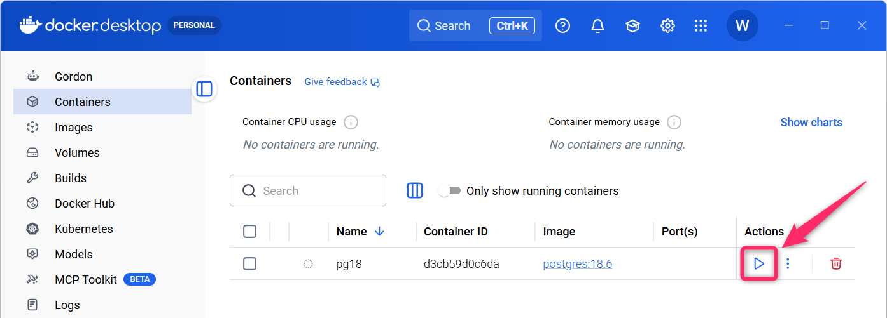
4.2 コンテナの停止
docker container stop xxxx コマンド相当の操作
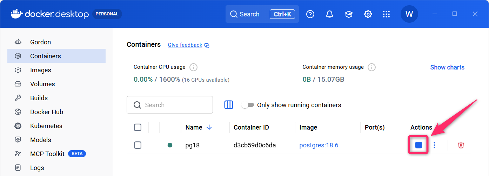
4.3 コンテナのシェルを利用
docker container exec -it xxxx bash コマンド相当の操作
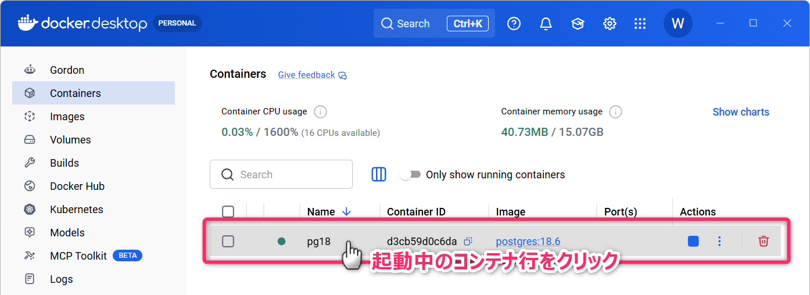
Exec タブを選択します。
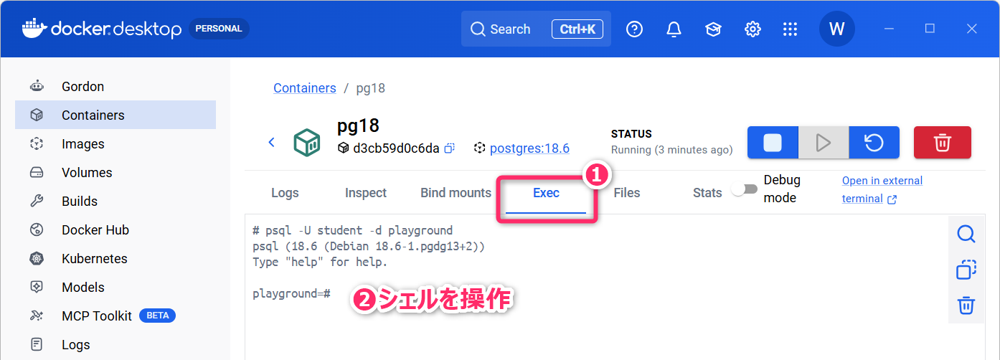
4.4 コンテナの削除
docker container rm xxxx コマンド相当の操作
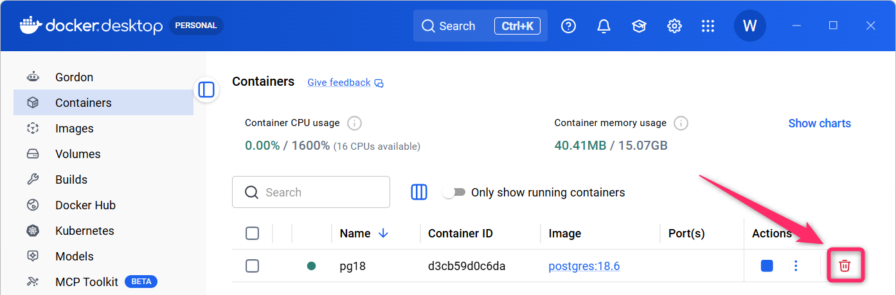
5 Docker 環境での PostgreSQL のポート通信設定
ここまでの説明では docker container exec を使って、コンテナ内の
psql (クライアントツール) から PostgreSQL
のサーバプロセスを利用しました。psql は
psql -U student -d playground のように起動したとき、UNIXドメインソケット というものを介して、PostgreSQL
のサーバプロセスと通信をします。
UNIXドメインソケット とは、Linux や macOS のようなUNIX系OSで使われるプロセス間通信 (IPC: Inter-Process Communication) の仕組みで、同じホスト上で動作するプログラム同士が、ネットワークを経由せずに高速に直接データをやり取りするための方法 です。
つまり、ここまでの範囲で説明した使い方は、「PostgreSQL のサーバプロセス」と「クライアントツール」の通信が すべて「コンテナの内部」で完結しているもの でした。
一方で、PostgreSQL のサーバプロセスとは別のホストのクライアントツールから接続するときや、Windows (ホストOS) 上の TypeScript や Python などのプログラムからDBに接続するとき には TCP/IP 接続 (ポート通信) を使います。
Docker Desktop を起動している「Windows (ホストOS)」と「Docker コンテナ」の間での TCP/IP
接続を有効化するには docker container create コマンドの実行時に、次のように
-p オプションを指定する必要があります。
docker container create --name pg18 `
-e POSTGRES_USER=student `
-e POSTGRES_PASSWORD=secret123 `
-e POSTGRES_DB=playground `
-p 5432:5432 `
postgres:18.6この設定により、
- PostgreSQLのサーバプロセスが稼働しているコンテナの5432番ポート と
- ホストOS (Windows) の5432番ポート が
マッピングされるようになります。これで、任意のクライアントツールやプログラムから 5432番ポートを使って PostgreSQL に接続できるようになります。
なお、既にホストOS側の別のアプリが 5432 番ポートを使っている場合は
-p 5433:5432 のようにして、ホスト側のポート番号を 5433
に変えることができます。-p
では「ホスト側のポート番号:コンテナ側のポート番号」の順に指定します。
5.0.1 定着確認
- PostgreSQL で使用される標準の通信ポート番号を答えよ。
- 答え: 5432番
- Linux や macOS などの UNIX 系 OS
において、同一ホスト内のプロセス間通信に使われ、PostgreSQL
のローカル接続にも利用される仕組みを何というか答えよ。
- 答え: UNIXドメインソケット
5.1 演習 (宿題・授業時間外)
TCP/IP ポートのマッピング設定を含めて Docker コンテナを作成・起動し、Windows (ホストOS) 上のクライアントツールから、コンテナ内の PostgreSQL サーバプロセスに接続してみましょう。
プロンプト例
Dockerコンテナとホストで「ポートをマッピングする」とは、どのようなことですか。PostgreSQL のコンテナを作成する状況を想定して解説してください。
5.1.1 コンテナ側の準備
まず、pg18 という名前のコンテナが存在していれば
docker container rm pg18 コマンドで削除しておきます。起動中の場合は、先に
docker container stop pg18 で停止してください。
次に、以下の docker container run コマンドで、5432番ポート
(PostgreSQLの標準ポート) のマッピング設定 を含めてコンテナを作成・起動します。
docker container run --name pg18 `
-e POSTGRES_USER=student `
-e POSTGRES_PASSWORD=secret123 `
-e POSTGRES_DB=playground `
-p 5432:5432 `
-d `
postgres:18.6つづいて docker container exec -it pg18 bash コマンドで、pg18
コンテナ内の Bash を起動し、psql で s_users
テーブルを作成し、いくつかのレコードを挿入しておきます (参考1、参考2)。
ホストとコンテナのポート対応の確認
作成済みコンテナにおいて、どのポートがどのようにマッピングされているか
(＝ホスト👉コンテナの対応) を確認するためには docker port
コマンドを使用します。
docker port pg18
のようにコマンドを実行すると、次のような結果が表示されます。
5432/tcp -> 0.0.0.0:5432
5432/tcp -> [::]:54321行目 は、コンテナ内の TCP ポート 5432 が、ホストOSの
IPv4 アドレス 0.0.0.0 の 5432
番ポートに公開されていることを示しています。ここでの 0.0.0.0 は「すべての IPv4
アドレスで受け付ける」という特別な指定で、実際には 127.0.0.1 (ローカルホスト)
などのすべての IPv4 経路を含みます。
- たとえば、ホストマシンの IP アドレスが
192.168.1.8の場合、192.168.1.8:5432、127.0.0.1:5432、localhost:5432など、いずれの経路からアクセスしてもコンテナ内のポート5432に転送されることを意味します。
2行目は IPv6 向けの設定で、同様に IPv6 のすべてのアドレス
([::]) で接続を受け付けていることを示しています。
5.1.2 ホスト側の準備とTCP/IP接続
次に、PostgreSQLに対応し、インストール不要で使える軽量のSQLクライアント「HeidiSQL (ハイディエスキューエル)」を取得してきます。こちら から「Portable Windows version (zipped)」をダウンロードしてきます。
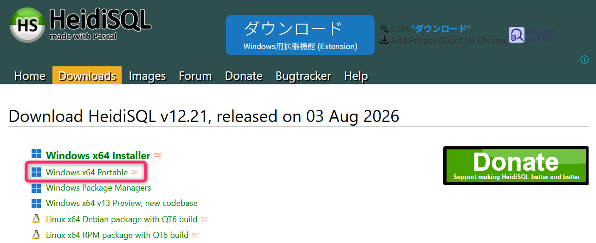
ダウンロードした Zipファイル を 完全展開 して、heidisql.exe
をダブルクリックして起動してください (Zipのプレビューモードでは heidisql.exe
は正常実行されないので注意してください)。
HeidiSQL の起動後、新規のDB接続設定を作成するために、画面左下の「新規」ボタンを押下します。
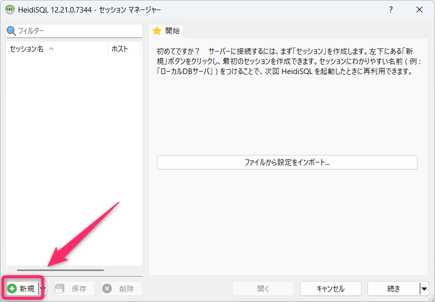
次のように接続設定をします。ユーザ、パスワード、データベース
の各項目は docker container run
コマンドで環境変数に設定した値を入力してください。入力が完了したら「開く」ボタンを押下します。
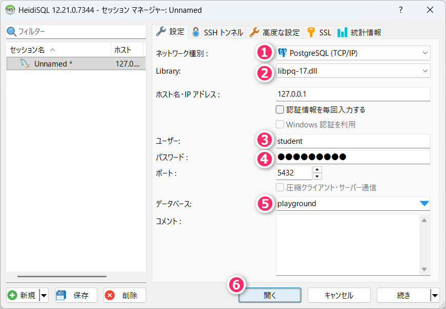
設定を保存するかを確認されるので「はい」を選択してください。
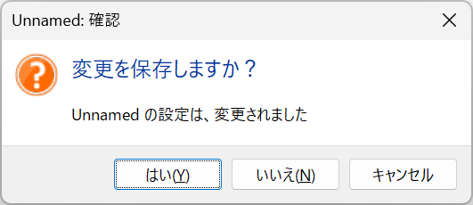
ここまでの手順にミスがなければ、5432番ポートを介して、コンテナで起動している PostgreSQL のサーバプロセスに接続され、以下のような画面が開きます。
画面上の public を展開して s_users
テーブルを選択してください。
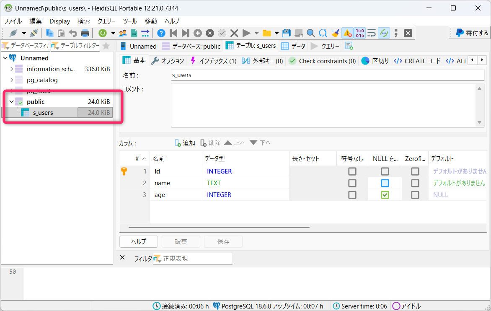
さらに、以下のように「データ」タブを選択することで、テーブルのレコードを確認することができます。
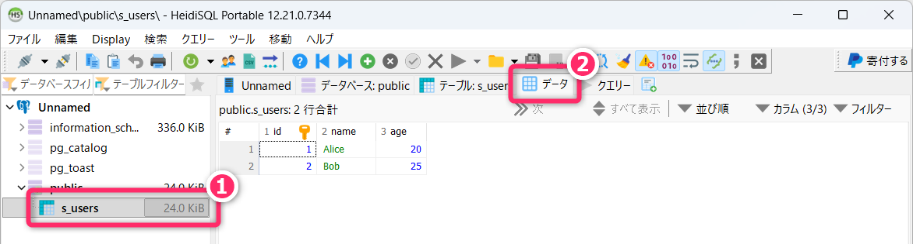
「クエリ」タブを選択し、SQLを実行することもできます。
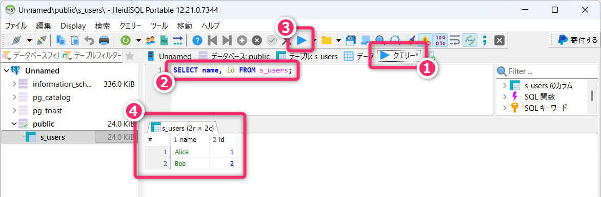
以上のように、コンテナを作成する際にポートのマッピングを設定することで、コンテナの外部から TCP/IP 通信で PostgreSQL に接続することができます。
なお、これ以降、本授業で HeidiSQL を使用する予定はないので、ダウンロードしたZipと、展開したフォルダは削除してもらって構いません。
6 Docker とは (詳細)
以上のハンズオンを通じて、体験的に Docker の概要が把握できたと思います。ここからは、Docker について、少しだけ詳しく解説していきたいと思います。
Dockerとは「コンテナ型仮想化技術」を実装したソフトウェアで、これを利用することで 普段使いの PC 環境をクリーンに保ったまま、様々な開発環境を構築 できるようになります。しかも、それぞれの開発環境が相互に影響しないようにすること ができるようになります。
- 例えば、プロジェクトA のために、Python のバージョンを
3.10から3.13に上げたら、「プロジェクトB で開発中だったアプリが動かなくなってしまった💦」といったトラブルを回避することができるようになります。
Docker を利用すると「なにがうれしいのか🤔」について、具体的な状況を想定して詳しく考えてみたいと思います。例として、次のような状況を考えていきます。
「データベース工学」の授業で「PostgreSQL 18」の環境構築が必要で、同時に「応用専門PBL2」でのプロジェクト開発で「PostgreSQL 15」の環境構築が必要になった。
このようなとき、次のような問題が考えられます。
- PostgreSQL
は、異なるバージョンを同時にインストール可能なものの、ポート番号やデータディレクトリの管理が煩雑になり、設定ミスのリスクが高くなる。
- 異なるバージョンの同時インストールが不可のプログラミング言語やサービスも存在
- 短期間の限定的な利用のために PostgreSQL
という重量級の常駐型ミドルウェアをインストールすることに抵抗感がある。
- 様々な開発環境のインストールとアンインストールを繰り返すと、レジストリが肥大化していきます。その結果、OSの起動に時間がかかったり、動作が不安定になったりする可能性があります。
このような問題を根本解決してくれるのが Docker となってきます。
Dockerでは コンテナ と呼ばれる独立した「箱」を用意し、各コンテナの内部に 最小限のOSと必要な開発環境 (例えば PostgreSQL など) を構築し、それぞれのコンテナを必要に応じて立ち上げることができます。メインのOSに直接インストールする場合と違って Windowsレジストリの書き換え などは起きません。
開発環境が不要になったときは、コンテナごと削除することもできます (イメージやボリュームは別に残ることがあります)。
さらに Dockerfile や docker-compose.yaml という軽量の設定ファイル
(テキストファイル)
を残しておけば、すぐに開発環境を再構築することも可能となります。また、その設定ファイルを使って、別のPC上に開発環境のクローンを構築することも比較的簡単にできます。
以上のように Docker (コンテナ型仮想化技術) には 普段使いのOS環境に影響を与えず、様々な開発環境を気軽に構築できる というメリットがあります。
なお、コンテナ型仮想化技術の「詳しい仕組み」については、本科目では解説しないので興味関心がある学生は、書籍や生成AIなどを利用して各自で掘り下げてください。少し古い書籍ですが 仕組みと使い方がわかる Docker & Kubernetes のきほんのきほん が初心者向けの内容になっており、お勧めです (研究室に所蔵しているので、内容を確認したい学生は声をかけてください)。
プロンプト例
Docker に代表される「コンテナ型仮想化技術」とは、どのような技術ですか。
Python では venv を使って仮想環境を構築して、ライブラリのバージョン管理ができます。また、Node.js では、package.json を用いて、プロジェクトフォルダ単位で npm パッケージのバージョン管理ができます。それらと、コンテナ型仮想化技術 (Docker) って何が違うのですか？
6.1 Docker の活用法
Docker は、次のようなケースで、特に便利に利用することができます。
6.1.1 ケース1
例えば Python 3.10 でアプリを開発していたとします。このアプリが Python 3.7、3.8、3.9、3.11 といった異なる実行環境でも正常に動作するかを確認したいとき、Docker を利用すると便利です。各バージョンの Python 環境をコンテナとして簡単に用意できるため、複数バージョンでの動作確認を1台のPCで手軽に行うことができます。
6.1.2 ケース2
チーム開発のように「全員の開発環境をそろえたい」ときにも Docker は強力です。OS (Windows/macOS) やライブラリの違いによる「自分の PC では動くのに、他の人のでは動かない…」というトラブルを防ぐことができます。同じ Docker イメージや設定ファイル (Dockerfile や docker-compose.yaml) を共有すれば、全員が限りなく同じ環境で開発することができます。
6.1.3 参考書籍
Docker を使用して開発環境を構築するときは、以下の電子書籍が参考になると思います。
- Docker Desktop for Windows/Mac でつくるクリーンな開発環境構築入門 (Web アプリケーション版) 2025版
- Docker Desktop for Windows/Mac でつくるクリーンな開発環境構築入門 (Python 版) 2025版
VSCode を Dockerコンテナ 環境に接続して開発
本科目では扱いませんが、VSCode の Dev Containers という拡張機能を利用すると、VSCode から Dockerコンテナ内（Linux 環境）に直接接続して、プログラムの実行やデバッグを含む開発作業 を行うこともできます。
- Dev
Containers 識別子:
ms-vscode-remote.remote-containers
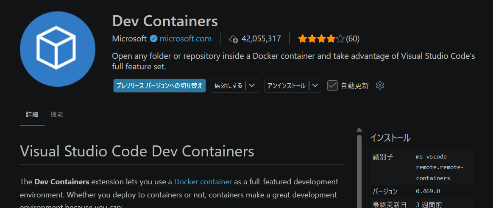
6.2 デメリット
各種環境を Windows に直接構築する場合と比較して、Docker を利用して環境構築することには、次のようなデメリットがあります。
- Docker そのものに対する「学習コスト」が大きい。
- ただし、ソフトウェアエンジニアを目指すなら必要な学習投資です。
- システムリソースの消費が大きい。
- パフォーマンスのオーバーヘッドがある。
- Windows や macOS では、Docker は仮想化レイヤ (Linux VM) を介して動作するため、ネイティブインストールと比較するとパフォーマンスが低下します。特に、ファイルI/O が頻繁に発生する処理、大量のデータを扱うデータベース操作などで影響があります。
7 授業時間外学習の指示 (宿題)
🚨本科目は「学修単位科目」であり、1回の講義あたり、4時間相当の授業時間外学習が求められる科目です🏃
- 次回の講義で「小テスト」を実施します。
- 講義のなかでは
docker container createのコマンドオプションで、コンテナに対する各種設定を行いました。しかし、実務ではコマンドオプションではなく、代わりにdocker-compose.yamlというファイルを作成し、そこに設定を記述するという方法が用いられます。docker-compose.yamlを使った Docker コンテナの作成と起動方法について調べてみてください。
プロンプト例
いま、Docker コンテナを
docker container run --name pg18 -e POSTGRES_USER=student -e POSTGRES_PASSWORD=secret123 -e POSTGRES_DB=playground -p 5432:5432 -d postgres:18.6のように起動しています。これをdocker-compose.yamlを使った方法に切り替えたいです。どのようにすればよいですか。
- 講義では、
postgres:18.6という PostgreSQL の公式イメージを そのまま利用 しましたが、実務では要件に合わせて独自のイメージを作成することが多く、その際に使われるのがDockerfileとなります。たとえば、追加パッケージの導入や、自分で用意した設定ファイル・サンプルデータのコピー、環境変数の設定、初期化スクリプトの配置などを行います。Dockerfileを用いたカスタムイメージ作成について調べてみてください。- Docker
の基本を学んでコンテナ型の仮想環境を作ろう！ @YouTube
- 22:46 ～ Dockerfile からコンテナを起動する解説
- Docker の
Dockerfileやdocker-compose.yamlのように、インフラの構成をプログラムコードとして記述し、管理・自動化する考え方を IaC（Infrastructure as Code） といいます。
- Docker
の基本を学んでコンテナ型の仮想環境を作ろう！ @YouTube
- 次の動画では、Dockerの基礎知識から実際に開発環境を構築するまで徹底解説されています。おすすめです。
- 【図解】これなら分かる!!はじめてのDocker @YouTube
- この講義資料を再読・熟読し「不明な用語」や「理解が不十分な用語」があればインターネットや、ChatGPTなどの生成AIを利用して解決してください。また、興味関心を持ったトピックについて、ウェブ、生成AI、YouTube動画などを利用して知識を広げ、理解を深めてください。
- 特に プロンプト例 を示しているものについては、実際に生成AIにプロンプトを投げ、さらに対話を重ねることで、知識の幅を広げるだけでなく、理解をより深く確かなものにしてください。
- 講義資料内の「演習」に再度取り組んでください。演習内容は、授業時間中に1回取り組むだけでは定着しないので注意してください。